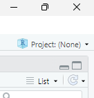
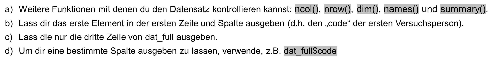

Hands_On_2
1 Hands On – Coding Basics (Einheiten 2 und 3)
3te: projekte, einleksen und matrizen und listen.
matitzen vs. listen vs. dfs.
4te einheit: mergen
Bei Bedarf findest du hier nochmals die Slides zu Einheit 3:
1.1 Lernziele dieses Hands-On-Blocks
Verstehen von Pfaden und Projekten:
- Relativ vs. Absolut
- Projekte
Coding Basics:
- Daten einlesen
- Daten exportieren
- Datensätze mergen (zusammenfügen)
- Vor- und Nachteile verschiedener Funktionen kennenlernen (Wann brauche ich welche Funktion?)
Liste und Matrizen
2 Projekte und Pfade
2.0.1 Was sind R-Projekte?
Ein R-Projekt ist eine Projektdatei (.Rproj), die du in RStudio anlegst.
Wenn du ein Projekt öffnest:
- RStudio setzt automatisch das Working Directory (Arbeitsverzeichnis) auf den Ordner, in dem die
.Rprojliegt.
- Alle Dateien, Skripte, Daten und Ergebnisse, die du in diesem Ordner ablegst, gehören logisch zu diesem Projekt.
- Man kann es sich vorstellen wie einen „Container“ für ein Forschungsprojekt, eine Hausarbeit oder ein Analysepaket.
- Du kannst entweder ein neues Projekt erstellen oder ein bestehendes Projekt öffnen.
👉 In RStudio siehst du oben rechts, in welchem Projekt du dich gerade befindest.

Übung:
Im Ordner grinschgl2020 liegt bereits eine .Rproj-Datei. Öffne sie und überprüfe oben rechts in RStudio, ob du dich im richtigen Projekt befindest.
2.0.2 Absolute vs. relative Pfade
- Absolute Pfade beschreiben den vollständigen Weg zu einer Datei, ausgehend vom Wurzelverzeichnis deines Computers.
- Nachteil: Sie sind oft sehr lang und funktionieren nur auf deinem Rechner.
- Beispiel (Windows):
C:\Users\maxmustermann\Dokumente\r_you_ready\Grinschgl2020\data\raw\Beispieldatei.csv
- Nachteil: Sie sind oft sehr lang und funktionieren nur auf deinem Rechner.
- Relative Pfade beschreiben den Ort einer Datei relativ zum aktuellen Working Directory.
Vorteil: Sie sind kürzer und funktionieren auf jedem Rechner, solange die Projektstruktur gleich bleibt.
Beispiel:
- Projektordner = Grinschgl2020
- Datei liegt in data/raw/Beispieldatei.csv
- relativer Pfad:
data/raw/Beispieldatei.csv- Projektordner = Grinschgl2020
3 Daten importieren und exportieren
3.1 Import
3.1.1 Einlesen via Oberfläche
Stelle sicher, dass du das Metapaket tidyverse geladen hast (siehe Hands-On 1).
Wir verwenden Funktionen aus den Packages readr und readxl, die Teil des Tidyverse sind.Importiere die Datei
"data_mmq.csv"über die Point-Click-Oberfläche von RStudio.- Tipp: Klicke auf Environment → Import Dataset → wähle
"readr"-Funktion. - Schaue dir den Datensatz an: Mit welchem Trennzeichen sind die Daten getrennt?
- Stelle in der Oberfläche
"Delimiter"auf das passende Trennzeichen. Was verändert sich?
- Stelle in der Oberfläche
- Betrachte den Code, den die Oberfläche generiert. Versuche den Pfad im Kontext von Projekten zu verstehen.
- Schaue dir die eingelesenen Daten mit
view(data_mmq)an.
- Tipp: Klicke auf Environment → Import Dataset → wähle
3.1.2 Einlesen via Code
XXXXX Namen updaten.
Versuche, weitere CSV-Datensätze einzulesen:
cbt_prop,cvstm_prop,data_pct,vp_prop.
Suche dafür eine geeignete Funktion zum Einlesen von.csv.XXXXX Korrigiere diesen Code.
Korrigiere diesen Code und lies damit die Datei
vp_propein:Einige Dateien liegen im
.xlsx-Format.- Verwende dafür das Paket readxl und die Funktion
read_excel(). - Nutze die Hilfefunktion (
?read_excel) für Infos. - Versuche, die Datensätze
data_ratingsunddata_strategieseinzulesen.
- Verwende dafür das Paket readxl und die Funktion
Am Ende solltest du 7 verschiedene Datensätze in deinem Environment sehen.
3.2 Datensätze inspizieren
Verschaffe dir eine Übersicht über die Datensätze, verwende dabei die verschiedenen Funktionen die wir dafür bereits im Hands-on 1 kenengelernt haben:
head()glimpse()str()data_cbtsummary()

4 Datenstrukturen: Vektoren, Listen, Matrizen und Data Frames
Bevor wir mit den Übungen starten, ein Überblick über die Unterschiede:
| Struktur | Eigenschaften | Beispiel-Inhalt |
|---|---|---|
| Vektor | - Enthält Elemente eines Datentyps - Grundbaustein in R |
c(1, 2, 3) oder c("Anna", "Ben") |
| Liste | - Kann verschiedene Datentypen enthalten - Elemente können unterschiedlich lang sein |
Zahlenvektor, Textvektor, logischer Vektor in einer Liste |
| Matrix | - Enthält nur einen Datentyp - Hat feste Dimensionen (Zeilen, Spalten) |
3x3-Matrix mit Zahlen 1–9 |
| Data Frame | - Tabellarisch aufgebaut - Spalten können unterschiedliche Datentypen enthalten - Jede Spalte gleich lang |
Tabelle mit Name (Char), Alter (Numeric), Studiert (Logical) |
👉 Merksatz:
- Vektor = einfachste Struktur, ein Datentyp
- Liste = flexibel, verschiedene Datentypen
- Matrix = „Zahlenrechteck“, ein Datentyp
- Data Frame = Tabelle, Spalten können unterschiedliche Datentypen haben
Wir haben in der Hands on Übungen einige einfache Vektoren erstellt und damit operiert. NUn schauen wir uns weitere formate an.
4.1 Listen
Eine Liste kann verschiedene Datentypen enthalten (z. B. Zahlen, Zeichenketten, logische Werte).
👉 [Listen, Kapitel
Erstelle eine Liste mit drei Elementen:
einem Vektor mit den Zahlen 1 bis 5
einem Character-Vektor mit den Namen deiner Kommiliton:innen
einem logischen Vektor (TRUE, FALSE)
Greife auf das zweite Element der Liste zu.
Greife auf den dritten Wert des ersten Elements der Liste zu.
Füge der Liste ein weiteres Element hinzu (z. B. den Mittelwert der Zahlen).
4.2 Matrizen
Eine Matrix besteht nur aus einem Datentyp (z. B. nur Zahlen).
Erstelle eine 3x3-Matrix mit den Zahlen 1 bis 9.
Wandle einen Vektor 1:12 in eine 3x4-Matrix um.
Greife auf das Element in der 2. Zeile, 3. Spalte zu.
Berechne die Spaltensummen und Zeilensummen.
5 Data Frames
Ein Data Frame ist eine tabellarische Struktur mit Spalten, die verschiedene Datentypen enthalten können.
Erstelle einen Data Frame mit drei Spalten:
name (Character)
alter (Numeric)
studiert (Logical: TRUE/FALSE)
Greife auf die Spalte “alter” zu
Filtere alle Zeilen, in denen studiert == TRUE.
Füge eine neue Spalte hinzu, die alter + 10 berechnet.
6 Daten mergen
Mögliche Funktionen: z.B. cbind() aus Base R oder full_join() aus dem Tidyverse.
Aufgaben:
Füge alle 7 Datensätze mit
cbind()zusammen und schaue dir das Ergebnis an.- Was fällt dir auf?
- Hinweis: Die Datensätze werden einfach nebeneinander „geklebt“, ohne inhaltlich abgeglichen zu werden.
- Reflektiere: Macht das Sinn? Was sind die Gefahren von dieser Art daten zu mergen?
- Was fällt dir auf?
Versuche es nun mit
full_join().- Lege eine gemeinsame Variable als Schlüssel fest, hier:
by = "code".
- Achtung:
full_join()funktioniert immer nur mit 2 Datensätzen gleichzeitig → du musst es also mehrfach anwenden, um alle 7 Datensätze zusammenzuführen.
- Hinweis: Im Datensatz
data_pctheißt die Code-Variable leicht anders. Verwende deshalbby = c("code_all" = "code").
- Lege eine gemeinsame Variable als Schlüssel fest, hier:
Der neu erstellte Datensatz soll
dat_fullheißen.Speichere
dat_fullin deinem Ordner"data"als CSV-Datei ab:
```r write.csv(dat_full, “data/dat_full.csv”)
xxx Weitere Möglichkeiten für Übungen (ggf ist das aber auch zu viel):
Umgang mit Vektoren (z.b. bestimmte Elemente anzeigen lassen; runden (siehe Folien EH 3/4/5)
Umgang mit Matrizen
ggf irgendwas zu “calling functions”: 2.4 https://r4ds.hadley.nz/workflow-basics.html & 2.3 https://methodenlehre.github.io/einfuehrung-in-R/chapters/02-R-language.html
vl auch: warum funktioniert dieser Code nicht? (mit einfachen Fehlern wie Typos)
Tab completions: 1.4.5 https://methodenlehre.github.io/einfuehrung-in-R/chapters/01-workflow.html
-Listen und Matrizen